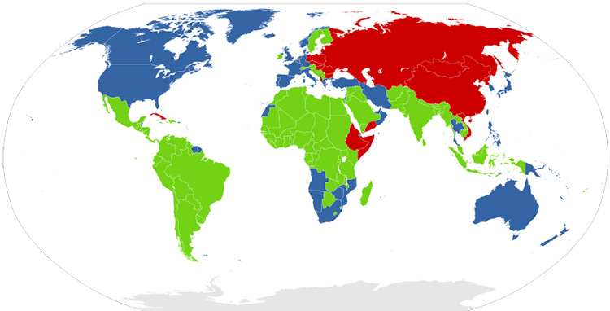

今天是“第三世界青年日”，当然可能大家都已经发懵了，听过许多青年节青年日，但这第三世界青年日是个什么日子？
国际青年日、世界青年日、五四青年节、第三世界青年日、世界青年与学生联欢节，乍得一看都长得差不多，如何区分它们就好比“如何有效区分张馨予、张涵予、张予曦、张雨绮、张雨鑫、张歆艺、张艺兴”……
首先我们来从这“第三世界”来说起。“第三世界”可不等同于希特勒的“第三帝国”，这个概念最先由经济学家Alfred Sauvy于1952年8月14日的法国杂志《新观察家》中提出；原本是指法国大革命时代的“第三阶级”；后被引伸来描述冷战时期，一些在国际政治上倾向中立，而经济发展较为落后的非洲、亚洲和拉丁美洲国家。这种说法，系从冷战背景下的意识型态区别着眼。
而之后，毛泽东主席也提起过“第三世界”的概念。在1974年2月22日同赞比亚总统卡翁达的谈话中曾提出：“我看美国、苏联是第一世界。中间派，日本、欧洲、澳大利亚、加拿大，是第二世界。咱们是第三世界。”此一定义，与最先流行的──着眼于冷战框架下意识型态区别的说法──采取完全不同的观点，而后稍微做了修正。
现在，这个词主要指那些具有很小联合国人类发展指数的国家，不管他们属于哪种意识形态。这些国家在学术上也被称为南部国家，发展中国家，不发达国家和主体世界。第三世界国家绝大多数过去都是帝国主义的殖民地或附属国，它们取得政治独立后，还面临着肃清殖民主义残余势力、发展民族经济、巩固民族独立的历史任务。
1973年7月，第三世界38个国家4000多名代表在突尼斯高呼“独立、统一、团结”口号，参加了首届亚非青年联欢节。1974年7月，在阿尔及利亚首都阿尔及尔召开的第三世界青年会议，会议主要讨论了青年在争取第三世界各国人民彻底解放斗争中的统一行动。1975年1月会议便正式决定每年2月24日为第三世界青年日。
1、不要在纠结于中国现在还是不是第三世界了，李克强总理说：“中国仍然是并将长期属于发展中国家”;
2、各位年轻的小鲜肉们，你们是维护世界和平的重要力量呀！